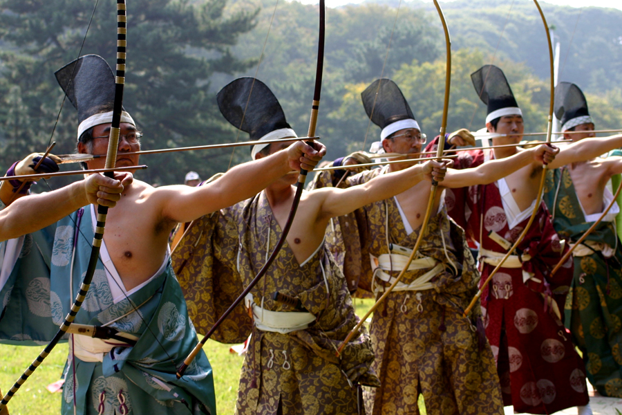

Archery is a relaxing sport that leads back the way to the late Paleolithic period about 10,000 BC where archery by the Egyptians and surrounding areas was used for hunting. At about the same time archery was used by China in the Shang dynasty to help fight their enemies and thereafter was used as entertainment in the Zhou (Chou) dynasty as the nobles attended tournaments that was accompanied by music.
Throughout history the art of archery was used to fight the enemy and was very helpful in both medium and longer range warfare. The archers beacme one with their bows and learnt how to perfect a shot fired from thier bow both on the move and when they where satationary.
Just like in the past archery today can be found all over the world. The archery of today is mainly used for recreational purposes such as hunting or sport and in both cases theres a huge variaty of styles available, much more than there was in the past, and are classed as these four main types: recurve bows , longbow, crossbow and compound bow.
There are many different styes of bows in the world but all of them fall into one of four groups and they are: crossbow recurvebows, compound bows and longbow
This is the list of different styles:| Main Style of bow | Pros | Cons |
|---|---|---|
| Compound Bows | ||
| Recurve Bows | ||
| Crossbows | ||
| Longbows |